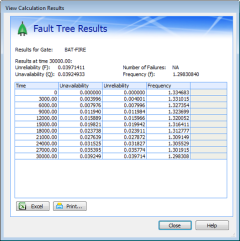
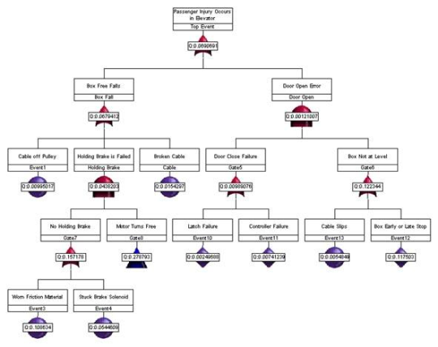
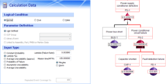

Visualize the Events that Lead to Component Failure
 Fault Tree Analysis (FTA) is well recognized worldwide as an important tool for evaluating safety and reliability in system design, development, and operation. For more than 40 years, FTA has been used in the aerospace, nuclear, and transportation industries to translate the failure behavior of a system into a visual diagram that displays system relationships and root cause failure paths. A fault tree provides a concise, visual representation of the various combinations of possible occurrences within a system that can result in a predefined and undesirable event. FTA is most often used for:
- Identifying safety critical components.
- Verifying product requirements.
- Certifying product reliability.
- Assessing product risk.
- Investigating accidents/incidents.
- Evaluating design changes.
- Displaying the causes and consequences of events.
- Identifying common-cause failures.
FTA is a deductive analysis method that begins with a general conclusion (a system-level undesirable event) and then attempts to determine the specific causes of this conclusion. Based on a set of rules and logic symbols from probability theory and Boolean algebra, FTA uses a top-down approach to generate a logic model that provides for both qualitative and quantitative evaluation of system reliability.
The undesirable event at the system level is referred to as the top event. It generally represents a system failure mode or hazard for which predicted availability data is required. The lower level events in each branch of a fault tree are referred to as basic events. They represent hardware, software, and human failures for which the probability of failure is given based on historical data. Basic events are linked via logic symbols (gates) to one or more undesirable top events.
FTA Software Tools
Small fault trees have fewer than 100 events, medium fault trees have from 100 to 1,000 events, and large fault trees have more than 1,000 events! Today, FTA software tools can be used to analyze very complex systems as well as very complex relationships between hardware, software, and humans. Using good FTA software, you can calculate, cut, copy, paste, rearrange, and delete events and gates to various fault tree branches to quickly and easily compare different hardware configurations. An example of a computer-generated fault tree follows.

In the above figure, "Passenger Injury Occurs in Elevator" is defined as the top event. The reasons why passenger injury in an elevator could occur have been determined to be either that the box free falls or that the door is open at an inappropriate time. After determining all possible causes for each event identified, the events and gates for connecting them to higher-level events are added to the fault tree. Any faults that can be further developed to determine causes are then added as lower-level events and connected by the appropriate gates.
The lowest-level events that terminate fault tree paths are called basic events or primary events. They are either component-level events that cannot be further resolved or external events. For example, in the first level of possible events for the free fall of the box, "Cable off Pulley" and "Broken Cable" are basic events. Because these events are primary faults, they are not developed any further in the fault tree.
Fault Tree Construction
To construct a useful fault tree, the analyst must fully understand the system as an integrated interaction of subsystems. In addition to having a logical mind and the ability to visualize the logic structure and interaction of a system and its subsystems, the analyst must have knowledge of the dependencies between the components, their reliability parameters, and the conditions that determine the components that are considered to have failed. Thus, good analysts are generally experts in mechanical, structural, electrical, and control systems and also have an understanding of human interactions, procedural implications, and even chemical interactions.
The most common errors in constructing fault trees include:
- Using too wide of a scope for the top event, which results in a large, complex, and unfocused fault tree.
- Using inconsistent nomenclature for the same events, which prevents you from finding events that occur in multiple branches of the fault tree.
- Using the same nomenclature for similar but different components, thereby identifying the same failure for several scenarios when these failures are actually caused by different components.
- Breaking the fault tree into branches by electrical, mechanical, and structural subsystems, thereby failing to take the interface and integration of the system into account.
Top Event Definition
Because the top event sets the tone for the series of questions that are considered when constructing the fault tree, the analyst should use the system definition to construct a clear and concise top event. If a top event is vaguely stated, the fault tree is likely to be large, complex, and unfocused. Specifying the specific mission phase or portion of the mission to which a top event applies in the description of the top event often helps to generate a very concise fault tree.
Event Nomenclature
During fault tree creation, consistently applying the appropriate nomenclature to events is critical to identifying the same event in multiple fault tree branches. If, for example, you give an event a different name in another branch of the fault tree, cutset analysis (described below) identifies multiple events leading to different failures (rather than the same event leading to different failures). If you do not realize that nomenclature errors exist, you may not recognize an event as a major contributor to the top event and thereby fail to recommend improvements or controls for it. Similarly, when two identical components are installed in different locations within a system, you must be sure to identify that they are physically different components by using reference designators in the nomenclature. Otherwise, cutset analysis identifies how the same component failure contributes to several scenarios when the failures are actually caused by different components.
Branch Arrangement
Because engineering groups so often function autonomously, fitting each piece of hardware together in a system tends to be an afterthought. Organizations that regularly categorize work by engineering disciplines tend to arrange the branches of a fault tree by subsystems. However, such an arrangement limits FTA to considering only component failures. When engineering groups fail to properly coordinate and implement a design as a team, interfaces and interactions are most often the areas in which the system breaks down. When fault tree branches are arranged by subsystems, these areas are never even addressed.
When scenarios that lead to the top event are used to arrange fault tree branches, the analyst can place faults under the cause for a component failure. Causes can include not only hardware failures but also interface and integration problems due to design flaws, software, human errors, operation and maintenance errors, and environmental influences on the system. Fault trees arranged by scenarios often uncover complex relationships and interactions of systems, components, and actions that are believed to be unrelated. For example, such an FTA can reveal a single-point component failure that can fail two supposedly redundant or independent systems.
Fault Tree Analysis
After properly identifying all failures, events, and conditions that can lead to the occurrence of the top event, you can calculate the probability of the top event and measure the relative impact of a design change. The traditional analysis process is to generate the system minimal cut sets, apply the basic event probabilistic data, and then determine the probability of the top event.
The qualitative analysis of fault trees is based on determining the minimal cutsets for the top event. Cutsets identify the sets of events that cause the top event to occur. A cutset can be a single-point failure or event or can be a set of many events. Different cutsets can include different combinations of the same event. A minimal cutset is the smallest group of events that cause the top event to occur. In large trees, the events that cause the top event to occur are often buried deep within the system and are not easily discovered without performing cutset analysis.
The basic events that belong to a cutset provide such information as single-point failures and the relative contributions of each cutset. Generally, the cutsets that have the highest probability of occurrence are the ones that have the fewest number of events. Thus, the minimal cutset information obtained during qualitative analysis can be used for computing the unavailability and unreliability values of the system during quantitative analysis. For quantitative analysis, reliability and maintainability information such as failure probability or repair rate is used to determine or quantify the probability of occurrence of the top event.
Conclusion
Because FTA is an event-oriented analysis, it can identify more possible failure causes than structure-oriented FMEAs (Failure Modes and Effects Analysis) and RBDs (Reliability Block Diagrams), which allow only hardware failure considerations. When performed correctly, FTA often identifies system problems that other design and analytical methods would overlook.
For additional information about Windchill FTA (formerly Relex FTA) and how it can be used to help identify faults in critical systems, please visit www.crimsonquality.com/fta